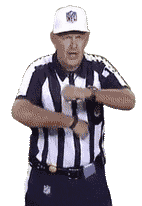

Rulebook Definition
After the ball is ready for play, encroachment occurs when an offesnive player is in or beyond the neutral zone after the snapper touches or simulates (hand[s] at or below his knees) touching the ball before the snap.
Exception: When the ball is put in play, the snapper is not encroaching when he is in the neutral zone.
Penalty Assessed
5 yards from the previous spot
Similar Calls

False Start